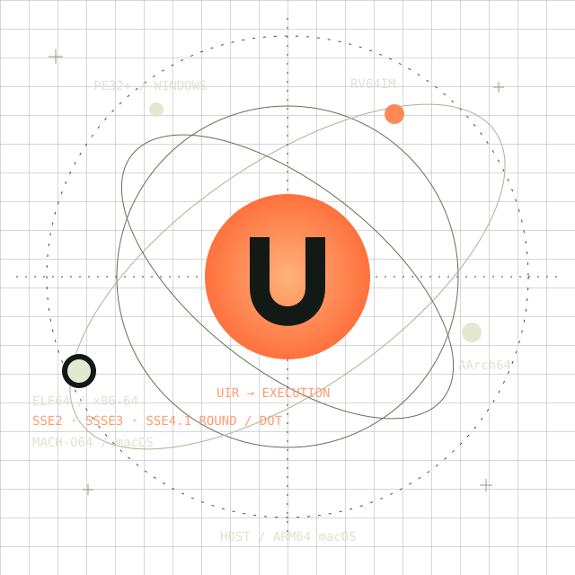

Software
from another
world.
Run software that was never built for your computer. Foreign machine code, translated by a runtime written in Zig.

Foreign code.
Real execution.
An ELF, PE or library-free Mach-O binary enters. UNIVERSE decodes its instructions and translates its OS calls on an ARM64 Mac.
A different destination
for your machine code.
These are recorded outputs from real, source-built guests in our local regression suite. Pick an example to see its command and result.
- 01Load the binary
- 02Decode into UIR
- 03Execute the guest
# host: Apple M2 · ARM64 macOS 26.6 # guest: static Linux x86-64 ELF64 $ ./zig-out/bin/universe artifacts/guests/x86_64/hello-asm Hello from x86-64 Linux!
Which worlds
can we reach?
Working examples, honest boundaries. Execution below is verified on Apple M2 / macOS 26.6 ARM64.
| Guest | Format | Verified examples | Level |
|---|---|---|---|
| Linux / x86-64 | ELF64 | Assembly, nine C fixtures, PIE and static musl | Executed |
| musl / x86-64 + AArch64 | Dynamic ELF64 / PIE | Optional DSO, constructor and single-thread TLS fixture | Experimental |
| Linux / RISC-V | ELF64 | Nine integer C fixtures in RV64IM and compressed variants | Executed |
| Linux / AArch64 | ELF64 | Nine integer C fixtures | Executed |
| Windows / x86-64 | PE32+ | Console/files, command lines, memory and guest DLL fixtures | Executed |
| BusyBox / x86-64 | Static ELF64 | Optional minimal echo / cat / ls build | Applet subset |
| macOS / x86-64 + ARM64 | Mach-O64 | Five library-free console, argv/env, memory and file fixtures | Executed |
Partial compatibility. No complete CPU ISA, arbitrary app compatibility or BusyBox shell claim. Linux host builds are cross-compiled; execution there is unverified. This page follows current main; v0.1.0 is the initial release.
Read the exact boundaries ↗
One shared
execution core.
Architecture-specific decoders feed a small universal IR. Checked guest memory, a Zig interpreter and a native ARM64 register-block JIT do the execution.
Validated bytes
Explicit operands
Shared execution
ABI translation
The JIT is optional. It accelerates our measured RISC-V workload and slows down the measured x86 and AArch64 cases.
See the actual measurements ↗Follow every instruction
Step, set a breakpoint, inspect registers, dump UIR and trace syscalls.
Built here, in Zig
The loaders, decoders, guest memory, interpreter and JIT belong to UNIVERSE.
Proof you can reproduce
Source-built guests, output and side-effect checks, malformed inputs and bounded mutation tests.
Your first
foreign guest.
Clone the project, build the runtime and compile the checked-in guests. Then send a Linux x86-64 binary through UNIVERSE.
Open the launch manual ↗git clone https://github.com/OthmaneBlial/universe.git
cd universe
zig build -Doptimize=ReleaseSafe
python3 scripts/fixtures.py
./zig-out/bin/universe artifacts/guests/x86_64/hello-asmThe universe
is still expanding.
The core idea works. Broader application compatibility is the next expedition: more instructions, richer OS behavior and real programs driving each regression.